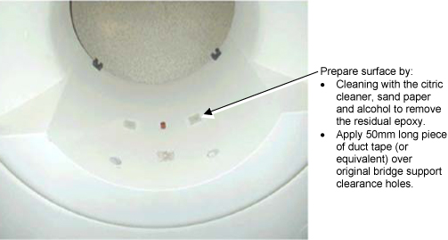
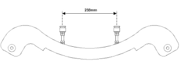
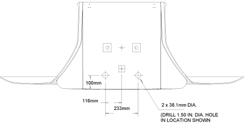
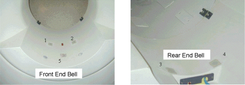

Illustration 17: End Bell Modification Preparations

Illustration 17: End Bell Modification Preparations
Illustration 18: End Bell Modification Preparations (cont'd)

Illustration 19: Through Hole Location Centerline Measurement

Illustration 20: Through Hole Location Detailed Measurements If Centerline Measurement Is 233

Illustration 21: End Bell With Properly Fitted Access Hole

Illustration 22: Closure Of Air Leaks

Illustration 23: Modification Of End Bell Gussets